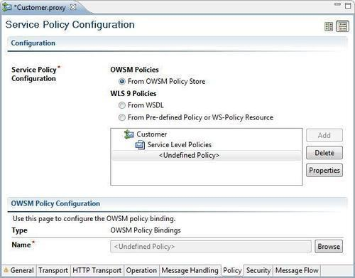
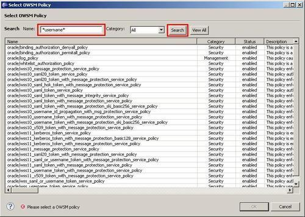
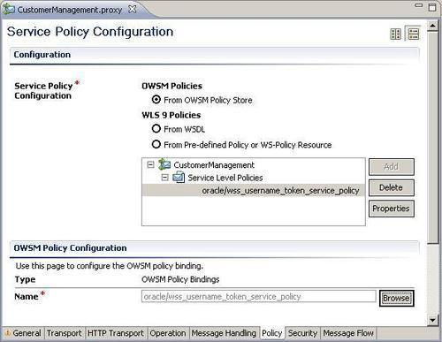
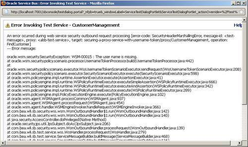
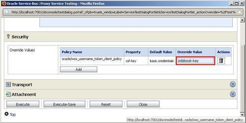
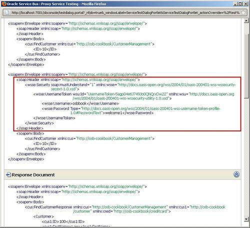
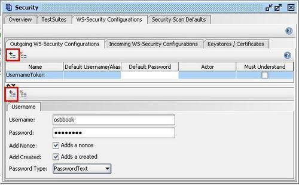
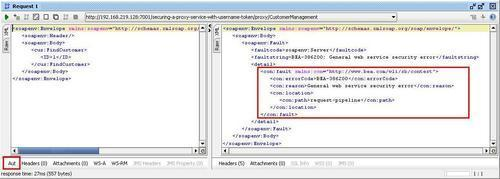

In this recipe, we will secure a proxy service with an OWSM server policy using Eclipse OEPE.
For this recipe, we will use a simple OSB project with one proxy. Import the getting-ready project into Eclipse OEPE from \chapter-11\getting-ready\\securing-a-proxy-service-with-username-token.
The OSB Server must be up and running and configured using the first two recipes of this chapter. This server needs to be defined in the Eclipse OEPE for this recipe to work.
In Eclipse OEPE, perform the following steps to add an OWSM policy to a proxy service:
proxy folder of the securing-a-proxy-service-with-username-token project.
*username* into the Name field and click Search.

We have successfully secured our proxy service using UsernameToken WS-Security SOAP headers to authenticate users.
Now let's test it first using the Service Bus test console. In the Service Bus console, perform the following steps:
proxy folder) and click on the Launch Test Console icon (with the bug).
osbbook-key into the Override Value field and click Execute.

The Username Token authentication policy uses the credentials in the UsernameToken WS-Security header to authenticate users. Only the plain text mechanism is supported. The credentials are authenticated against the configured identity store on WebLogic server.
The usernames used in the user authentication policies will be validated against the users of the WebLogic security realm and the SOAP body will not be encrypted.
To add the OWSM policy to the proxy service, Eclipse OEPE needs to contact the OSB WebLogic server to retrieve the available OWSM server policies. We can add one or more OWSM policy references to a proxy service. These policies can only be added or verified when the OSB WebLogic server is running.
When the proxy service is deployed to the OSB Server, we can retrieve the WSDL of the proxy service. This WSDL will contain the WS security policies which can be used by the clients of this proxy service.
SoapUI can also be used to test secured web services. To test the proxy service just created previously, perform the following steps in soapUI:
http://[OSBServer]:[port]/securing-a-proxy-service-with-username-token/proxy/CustomerManagement?wsdl. UsernameToken into the Name cell and click OK. osbbook into the Username filed and welcome1 into the Password field.
